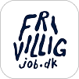

Vi hjælper studerende, nyuddannede
og akademikere med at
navigere i deres karriere.
KarriereVejviser er en online platform, der hjælper studerende, nyuddannede og professionelle med at navigere i deres karriere. Her finder du artikler, guides og inspiration om karrierevalg, jobsøgning, jobinterviews, udvikling i arbejdslivet og meget mere.
Formålet er at gøre det lettere at forstå dine muligheder på
arbejdsmarkedet
– uanset om du er i starten af din karriere eller overvejer dit
næste skridt.
Se hvordan du kan bruge KarriereVejviser til at finde inspiration,
lære virksomheder at kende og udforske nye karrieremuligheder.
På KarriereVejviser finder du artikler og guides, der gør komplekse
emner mere overskuelige. Det kunne for eksempel være:
Hvordan du vælger karrierevej
Hvordan du skriver en
god ansøgning
Hvad du kan forvente til
en jobsamtale
Hvordan du forhandler løn
og kontrakt
Hvordan du udvikler din
karriere over tid
KarriereVejviser er en del af Move On Career, som står
bag nogle af Danmarks største job- og karriereportaler.
Danmarks største jobportal for akademikere.
Job- og karriereportal for studerende.
Praktikpladser til universitetsstuderende.
Job til SOSU-uddannede i hele landet.
Oversigt over messer og events.

Portal til frivilligt arbejde og nonprofit-stillinger.
Jobportal for nyuddannede og alumner.